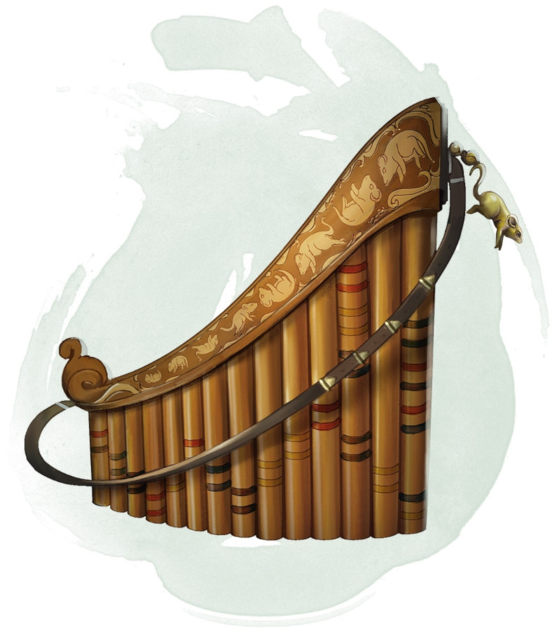

Flûte des égouts
Objet merveilleux, peu commun (nécessite un lien)
Vous devez avoir la maîtrise des instruments à vent pour utiliser cette flûte. Tant que vous êtes lié à cette flûte, les rats ordinaires et les rats géants sont indifférent à votre égard à moins que vous ne les attaquiez, les menaciez ou les blessiez.
La flûte possède 3 charges. Si vous utilisez une action pour jouer de la flûte, vous pouvez, en tant qu'action bonus, dépenser 1 à 3 charges pour appeler une nuée de rat par charges pour autant qu'il y ait suffisamment des rats dans un rayon de 800 mètres à la ronde. S'il n'y a pas assez de rats pour faire une nuée, la charge est perdue. La nuée se contente de suivre la musique par le chemin le plus court mais n'est pas sous votre contrôle. la flûte récupère 1d3 charges dépensées chaque jour à l'aube.
Quand une nuée de rat qui n'est pas sous le contrôle d'une autre créature se trouve à 6 mètres ou moins de vous alors que vous jouez de la flûte, vous pouvez faire un jet de Charisme contre la Sagesse de la nuée. Si vous échouez, la nuée se comporte normalement et ne peut plus être charmée par la flûte pendant 24 heures. Si vous remportez l'opposition, la nuée est subjuguée par la mélodie qui émane de la flûte et devient amicale envers vous et vos compagnons tant que vous jouez (ce qui vous coûte votre action chaque tour). Une nuée amicale obéit à vos ordres. Si vous ne lui en donnez aucun, elle se contente de se défendre sans entreprendre d'autres actions. Une nuée amicale qui commence son tour sans entendre la musique de la flûte se libère de votre contrôle, adopte son comportement normal et ne peut plus être charmé de la sorte avant 24 heures.
La flûte possède 3 charges. Si vous utilisez une action pour jouer de la flûte, vous pouvez, en tant qu'action bonus, dépenser 1 à 3 charges pour appeler une nuée de rat par charges pour autant qu'il y ait suffisamment des rats dans un rayon de 800 mètres à la ronde. S'il n'y a pas assez de rats pour faire une nuée, la charge est perdue. La nuée se contente de suivre la musique par le chemin le plus court mais n'est pas sous votre contrôle. la flûte récupère 1d3 charges dépensées chaque jour à l'aube.
Quand une nuée de rat qui n'est pas sous le contrôle d'une autre créature se trouve à 6 mètres ou moins de vous alors que vous jouez de la flûte, vous pouvez faire un jet de Charisme contre la Sagesse de la nuée. Si vous échouez, la nuée se comporte normalement et ne peut plus être charmée par la flûte pendant 24 heures. Si vous remportez l'opposition, la nuée est subjuguée par la mélodie qui émane de la flûte et devient amicale envers vous et vos compagnons tant que vous jouez (ce qui vous coûte votre action chaque tour). Une nuée amicale obéit à vos ordres. Si vous ne lui en donnez aucun, elle se contente de se défendre sans entreprendre d'autres actions. Une nuée amicale qui commence son tour sans entendre la musique de la flûte se libère de votre contrôle, adopte son comportement normal et ne peut plus être charmé de la sorte avant 24 heures.
Dungeon Master´s Guide (SRD)
